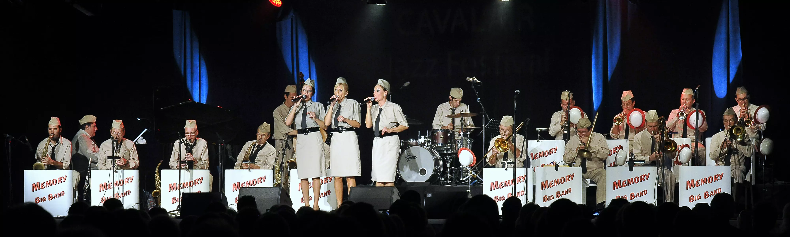

Memory Big Band – Hommage à Glenn Miller
Le 15 Décembre 1944, Glenn Miller disparaissait dans un avion de l’armée américaine.
C’est pourquoi, Le Memory Big Band lui rend hommage à travers le spectacle « Glenn Miller Story ». Il reprend tous les plus grands succès de son répertoire tels que In the Mood, Moonlight Serenade, At Last…
Le tout sur les arrangements originaux !
Le concert inclut quelques pièces issues de la collaboration avec les Andrews Sisters.Don’t Sit Under the Apple Tree, Boogie Woogie Bugle Boy, Bei Mir Bist du Schoen, Begin the Beguine et Apple Blossom Time), ainsi que plusieurs titres du célèbre clarinettiste Benny Goodman…
Donc une formation de référence !
Le Memory Big Band vous présente également son hommage à Ella Fitzgerald!